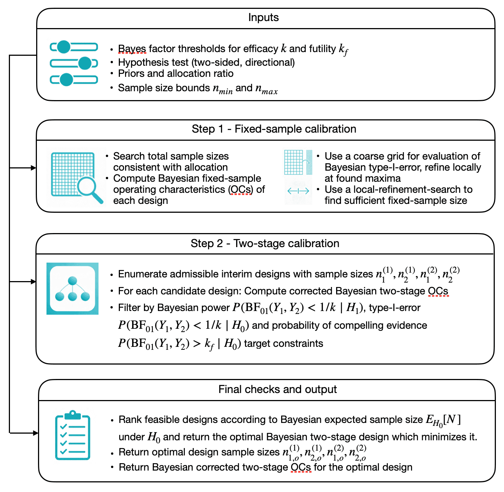
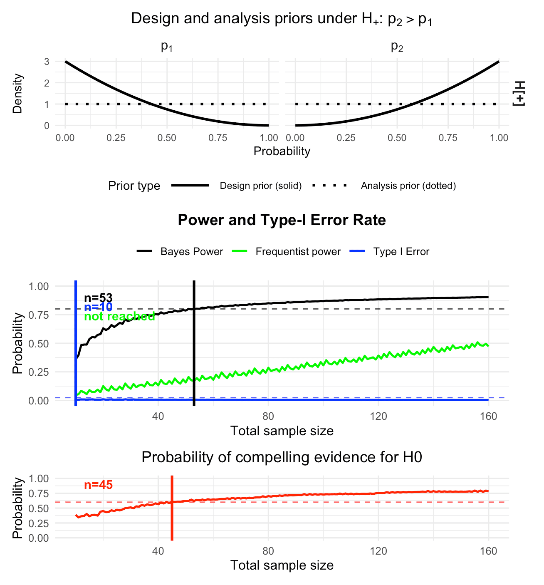
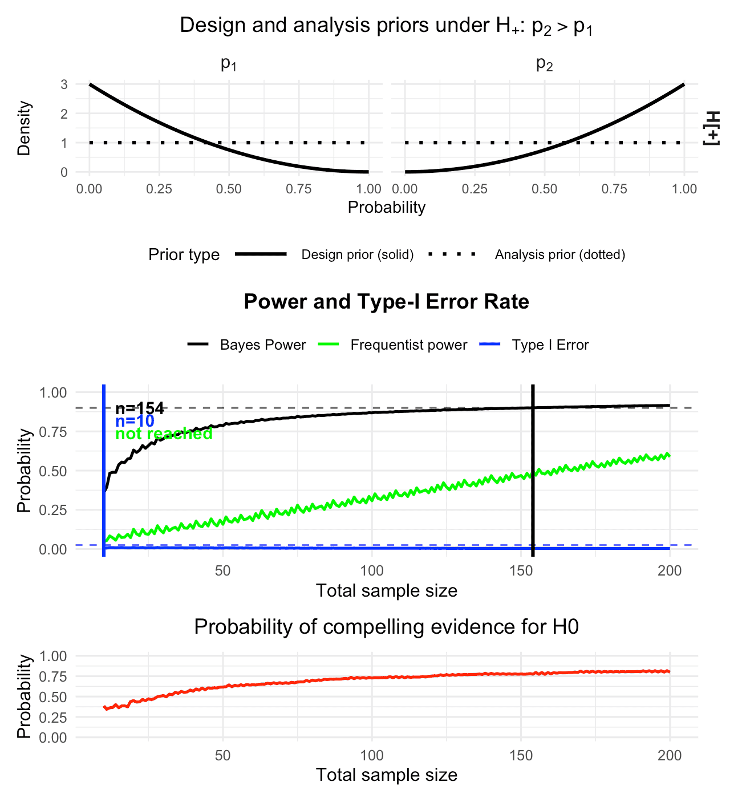
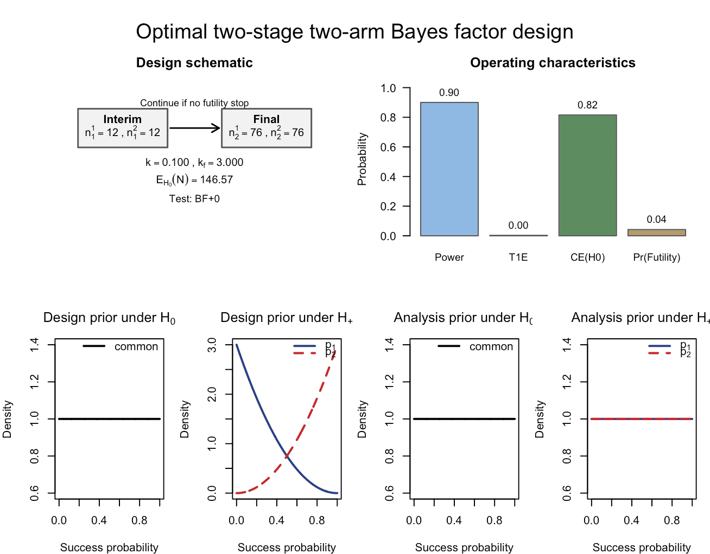

Optimal Bayesian calibration of two-arm two-stage Bayes factor designs with binary endpoints
Riko Kelter
Institute of Medical Statistics and Computational Biology
Faculty of Medicine
University of Cologne
Cologne, Germany
Institute of Medical Statistics and Computational Biology
Faculty of Medicine
University of Cologne
Cologne, Germany
23 June 2026
Source:vignettes/bfbin2arm-twoarm-twostage_Bayesian.Rmd
bfbin2arm-twoarm-twostage_Bayesian.RmdIntroduction
This vignette illustrates the use of the
design_twoarm_twostage_bf() function for designing
two-stage two-arm binomial phase II trials based on Bayes factors. We
re-analyze a clinical trial discussed in (Kelter
2026b) and show how to construct optimal Bayesian two-stage
designs in these settings. In contrast to a one-stage design, where
power and sample size calculations have been developed by Kelter and
Pawel (2025a, 2025b), and the designs we
aim for in this vignette always include an interim analysis which allows
stopping the trial early for futility. The corresponding single-stage
design without such an interim analysis is provided in (Kelter 2026b). The methodology for the
two-stage two-arm design is developed in (Kelter
2026a).
Thus, the principal goal of the
design_twoarm_twostage_bf() function is to provide a
calibrated Bayesian trial design for a phase II trial in terms of power
and type-I-error rate (and probability of compelling evidence for the
null hypothesis), which enables to stop the trial early for futility in
case there is sufficient evidence for the null hypothesis of no effect
or an effect too small in magnitude to be considered clinically
relevant.
Hypotheses and Bayes factors
We consider a two-arm trial with a control arm (arm 1) and a treatment arm (arm 2). Let and denote the response probabilities in the two arms. A typical hypothesis setup is:
- ,
- .
The Bayes factor compares the marginal likelihood under to that under . Small values of (e.g. or ) indicate evidence against , whereas large values (e.g. ) indicate evidence in favor of . Using the difference parameter , other typical hypothesis setups for a phase II trial are:
For details and further explanations on each of these directional tests, see (Kelter 2026b). The associated Bayes factors with each of these three directional tests are denoted as , and . Also, we denote and .
Priors: design vs analysis
The package distinguishes design priors used for calibrating power and type I error from analysis priors used inside the Bayes factor itself.
Design priors
Design priors describe our assumptions about the response probabilities under each hypothesis when computing operating characteristics.
Under : We assume a common response probability with set via the parameters
a_0_dandb_0_d.Under : We assume independent priors for the two arms: set via the parameters
a_1_d, b_1_d(for the control group) anda_2_d, b_2_d( for the treatment group).
For directional tests (test = "BF+0",
"BF-0", or "BF+-"), there are additional
design priors under a directional-null
(e.g. ),
specified by
a_1_d_Hminus, b_1_d_Hminus, a_2_d_Hminus, b_2_d_Hminus.
These are used for one-sided Bayes factors only. For details on the
precise specification of these tests, see Kelter
and Pawel (2025b).
Analysis priors
Analysis priors are the priors used inside the Bayes factor for each hypothesis. When the hypothesis of interest is tested via the Bayes factor, the analysis priors is the prior used in the calculation of the Bayes factor itself.
Under , the analysis prior for the common response probability again is Beta distributed, specified by the parameters
a_0_aandb_0_a.Under , we again use independent Betas for the analysis prior: specified via the parameters
a_1_a, b_1_aanda_2_a, b_2_a.
Typically, analysis priors are chosen to be relatively diffuse (e.g. Beta(1,1)), while design priors can express more specific beliefs about plausible response rates under each hypothesis. The design priors should express the assumptions or expectations about the effect of the novel treatment or drug. It influences the operating characteristics in the planning stage of the trial substantially. Even though the design priors can be highly subjective, it might still be possible to calibrate a design in terms of the resulting power and type-I-error rate. This way, even though the expectations about the effect of the novel drug or treatment might be quite optimistic, the design is legible from a regulatory agency’s point of view, such as the Food and Drug Administration (FDA), see U.S. Department of Health and Human Services et al. (2020) and U.S. Department of Health and Human Services Food and Drug Administration, Center for Drug Evaluation and Research (CDER), Center for Biologics Evaluation and Research (CBER) (2026) or European Medicines Agency (2025). In contrast, the analysis prior should be objective in the sense that the actual test carried out at the interim and final analysis is neither in favour of the null nor the alternative hypothesis.
Overview of the calibration algorithm
Figure 1 visualizes the calibration algorithm which finds an optimal two-arm two-stage design for a phase II trial with binary endpoints using Bayes factors as the primary measure of evidence.

Figure 1: Illustration of the calibration algorithm searching for an optimal Bayesian two-arm two-stage phase II design with binary endpoints
The calibration algorithm proceeds in two steps:
Fixed-sample calibration (step 1):
It searches over total sample sizes to find a sufficient fixed-sample design that meets the target power , type-I error and (optionally) the probability of compelling evidence for the null hypothesis .Two-stage calibration (step 2):
Conditional on this fixed-sample design, it considers all admissible interim sample sizes on a grid and, for each candidate, computes the corrected operating characteristics. Among those that satisfy the constraints, it selects the design that minimizes the expected sample size under .
The number of interim designs considered in step 2
is
where, for each arm
,
the admissible interim sample sizes form a grid
after applying the
interim_fraction bounds. Thus
is the number of grid points between the lower and
upper interim limits in arm
,
not the product of those bounds. Consequently, the larger the sufficient
fixed-sample sizes
found in step 1, the larger the sets
and
,
the more interim designs are explored in step 2, and the longer the
runtime.
For example, if
,
n1_min = c(10, 10) and grid_step = 1, then
has 30 elements in each arm, so
.
Several modelling choices strongly influence the runtime, and we
provide details below after discussing the first example. We turn to the
first detailed example now, showing how to calibrate a Bayesian phase II
design in practice with the function
design_twoarm_twostage_bf().
Riociguat phase II trial: fixed-sample design and optimal two-stage design
In this section we consider the Riociguat phase II trial in systemic sclerosis (Khanna et al. 2020), re-analysed in Kelter (2026b). For day-to-day use, the recommended entry points are the design wrappers
-
design_twoarm_onestage_bf()for fixed-sample designs without interim analysis, and
-
design_twoarm_twostage_bf()for two-stage designs with an interim analysis for futility.
Both functions calibrate the design with respect to Bayesian and, optionally, frequentist operating characteristics, and return a rich object with methods for printing, summarizing, and plotting.
The two-stage design function
design_twoarm_twostage_bf()
The main calibration function for the two-stage design is
design_twoarm_twostage_bf(). Internally, it calls the
lower-level engine optimal_twostage_2arm_bf() to perform
the two-step search (fixed-sample anchor, then interim-grid search as
shown in Figure 1), but users will typically interact only with the
design function.
For the Bayesian workflow considered in this vignette, the most
important arguments of design_twoarm_twostage_bf() are:
-
k,k_f: Efficacy and futility thresholds for the Bayes factor. Evidence against the null is declared when the Bayes factor falls belowk, and compelling evidence for the null is declared when the Bayes factor exceedsk_f. -
n1_min,n2_max: Vectors of length 2 giving the minimal interim and maximal final sample sizes in the two arms. -
alloc1,alloc2: Allocation probabilities to the two arms; these must be positive and sum to 1. -
target_power,target_type1: Target corrected Bayesian power and type-I error. Internally these determinealphaandbetafor the fixed-sample anchor search. -
target_ce_h0: Optional lower bound on the corrected Bayesian probability of compelling evidence for the null hypothesis. -
target_freq_power,target_freq_type1: Optional targets for frequentist power and type-I error; these can be activated via the calibration mode. -
calibration: Calibration criterion, one of"Bayesian","frequentist", or"hybrid". In this vignette we focus oncalibration = "Bayesian". -
calibration_en: Criterion for ranking designs by expected sample size, either"Bayesian"(default) or"frequentist". -
power_cushion: Optional extra power margin used in step 1 when identifying a sufficient fixed-sample design. This is relevant as Kelter (2026b) showed that the power of a two-arm design can decrease when introducing an interim analysis which allows stopping for futility only. As a consequence, the power cushion safeguards against obtaining a design which cannot meet the required power target after introducing an interim analysis. -
interim_fraction: Lower and upper bounds for the interim sample sizes, expressed as fractions of the fixed-sample sizes found in step 1. Defaults toc(0, 1), which means all interim designs betweenn1_minand the fixed-sample size found in step one of the calibration algorithm are analysed. For example,interim_fraction = c(0.25, 0.75)restricts the interim look to occur between 25% and 75% of the fixed-sample size, regardless of the numerical value ofn1_min. -
grid_step: Spacing of the interim-design grid searched in step 2. -
coarse_step: Spacing used in the coarse fixed-sample search in step 1. -
max_iter: Maximum number of fixed-sample sizes explored in step 1. -
progress: Logical; ifTRUE, prints progress messages during the calibration. This is helpful if a large number of two-stage designs needs to be analyzed by the algorithm. -
test: Bayes-factor test"BF01","BF+0","BF-0"or"BF+-". - The prior parameters
a_0_d, b_0_d, a_0_a, b_0_a, …specify the design and analysis priors under the relevant hypotheses, exactly as in the one-stage setting.
The function returns an object of class
"twoarm_twostage_bf_design" with the following main
components:
-
design: Named vectorc(n1_1, n1_2, n2_1, n2_2)giving the interim sample sizesn1_1,n1_2and the final sample sizesn2_1,n2_2. -
fixed_design: The fixed-sample anchor identified in step 1, stored asc(n_fixed_1, n_fixed_2). -
operating_characteristics: Corrected two-stage operating characteristics of the trial design, accounting for early stopping for futility (Bayesian power and type-I error, CE(H0), and, where requested, frequentist operating characteristics and expected sample sizes). -
fixed_operating_characteristics: Operating characteristics of the fixed-sample anchor from step 1. -
inputs: A list summarising the inputs used to determine the design. -
optimizer: A list containing the convergence flagconvand the prior specification used by the internal engine. -
engine_output: The full list returned by the internal optimizeroptimal_twostage_2arm_bf(), retained for transparency and advanced use.
In the Bayesian workflow, the corrected operating characteristics in
operating_characteristics are the key output, because they
quantify the actual two-stage design rather than the fixed-sample
surrogate used in step 1. The fixed-sample quantities in
fixed_design and
fixed_operating_characteristics are primarily useful as a
comparator.
Three convenient methods are provided:
-
print()gives a concise textual summary of the selected design and its operating characteristics. -
summary()adds search-level information and explicit calibration targets. -
plot()produces a six-panel base R plot, showing the design schematic, operating characteristics, and the design and analysis priors under the relevant hypotheses.
Riociguat phase II trial: Setup
In the riociguat trial, the reported response rates in the two-arm binary endpoint example are
p1_riociguat <- 38/(22+38) # control arm response probability
p1_riociguat
#> [1] 0.6333333
p2_riociguat <- 48/(48+11) # treatment arm response probability
p2_riociguat
#> [1] 0.8135593as given in Section 2.5 of Kelter (2026b)]. The response in the treatment group is higher compared to the control group, and the test we perform is versus . We thus exclude the possibility that the response probability in the control group can outperform the response probability in the treatment group. If this assumption is too optimistic, we could also perform the test of versus or the two-sided test.
Now, we use the following design and analysis priors for this example:
# flat design priors under H0
a_0_d_rio <- 1
b_0_d_rio <- 1
# slightly informative design prior under H1 (that is, H_+) for the control group
a_1_d_rio <- 1
b_1_d_rio <- 3
# slightly informative design prior under H1 (that is, H_+) for the treatment group
a_2_d_rio <- 3
b_2_d_rio <- 1
# Analysis priors under H0 and H1 (Riociguat)
a_0_a_rio <- 1 # flat under H0
b_0_a_rio <- 1
a_1_a_rio <- 1 # flat under H1 for the control group
b_1_a_rio <- 1
a_2_a_rio <- 1 # flat under H1 for the treatment group
b_2_a_rio <- 1We focus on the one-sided Bayes factor test
test = "BF+0" with evidence thresholds
k = 1/10 (strong evidence for efficacy) and
k_f = 3 (moderate evidence to stop early for futility),
compare Kelter (2026b). We provide a brief
discussion of choosing these thresholds below.
Riociguat phase II trial: Fixed-sample comparator via
design_twoarm_onestage_bf()
In the one-stage reference design used in Kelter (2026b) for the riociguat example, the trial uses
- patients in the control arm,
- patients in the treatment arm,
as reported in the paper. We now use
design_twoarm_onestage_bf() to compute a fixed-sample
design that achieves 80% Bayesian power, 2.5% Bayesian type-I error and
60% probability of compelling evidence for the null hypothesis. This
fixed-sample design serves as a comparator for the two-stage design
constructed later.
For the one-stage design, we also request frequentist power and
type-I error to be computed, assuming success probabilities
p1_power = 0.40 in the control arm and
p2_power = 0.60 in the treatment arm. The calibration
itself remains Bayesian in this vignette: the design is selected to meet
the Bayesian power and type-I-error targets, while frequentist
quantities are reported but not used as hard constraints.
The design priors are slightly informative, reflecting the
expectation that the treatment is more effective than placebo in the
control group and encoded by parameters such as
a_1_d = a_1_d_rio. The analysis priors are chosen flat via
parameters such as a_1_a = a_1_a_rio, as in Kelter (2026b). To keep the console output
compact in this vignette, we set progress = FALSE; in
practice you can set progress = TRUE to monitor the
calibration.
cat("\n--- One-stage design calibration for riociguat-type trial ---\n")
res_rio_onestage <- design_twoarm_onestage_bf(
n_min = 10,
n_max = 160,
k = 1/10,
k_f = 3,
test = "BF+0",
alloc1 = 0.5,
alloc2 = 0.5,
calibration = "Bayesian",
target_power = 0.8,
target_type1 = 0.025,
target_ce_h0 = 0.60,
target_freq_power = 0.8,
target_freq_type1 = 0.025,
p1_grid = seq(0.01, 0.99, 0.02),
p2_grid = seq(0.01, 0.99, 0.02),
p1_power = 0.4,
p2_power = 0.6,
power_cushion = 0,
sustain_n = 10L,
algorithm = "optimal",
progress = FALSE,
report_freq_type1 = TRUE,
a_0_d = a_0_d_rio, b_0_d = b_0_d_rio,
a_0_a = a_0_a_rio, b_0_a = b_0_a_rio,
a_1_d = a_1_d_rio, b_1_d = b_1_d_rio,
a_2_d = a_2_d_rio, b_2_d = b_2_d_rio,
a_1_a = a_1_a_rio, b_1_a = b_1_a_rio,
a_2_a = a_2_a_rio, b_2_a = b_2_a_rio
)The resulting design object can be inspected directly:
res_rio_onestageOne-stage two-arm Bayes factor design
------------------------------------
Mode: optimal
Status: Smallest feasible one-stage two-arm design found.
Calibration: Bayesian
Optional freq. Type-I reporting: off
Design: n_total = 53, n1 = 26, n2 = 27
Operating characteristics
Power = 0.8002
Type-I error = 0.0065
CE(H0) = 0.6206
Freq. Power = 0.1710
which prints the selected total sample size, the allocation into the two arms, and the corrected Bayesian and frequentist operating characteristics. For a more detailed view that includes the search overview and the calibration targets, use:
summary(res_rio_onestage)Summary: One-stage two-arm Bayes factor design
---------------------------------------------
Mode: optimal
Status: Smallest feasible one-stage two-arm design found.
Calibration: Bayesian
Feasible: yes
Search overview
n evaluated = 151
pointwise feasible = 109
sustained feasible = 108
first pointwise n = 51
first sustained n = 53
Selected design
n_total = 53, n1 = 26, n2 = 27The wrapper also provides a plotting method that reconstructs the familiar one-stage calibration plot:
plot(res_rio_onestage)
Figure 2: Calibrated Bayesian two-arm one-stage phase II design with
binary endpoints, obtained via design_twoarm_onestage_bf().
No interim analysis is carried out, and the design is calibrated to 80%
Bayesian power, 2.5% Bayesian type-I error and 60% probability of
compelling evidence for the null hypothesis.
Figure 2 shows the calibrated one-stage design developed in Kelter (2026b). In particular, it illustrates
that the one-stage design without an interim analysis requires 53
patients in total (as can be seen in
res_rio_onestage$design) to reach the desired threshold for
Bayesian power, while 45 patients are necessary to reach the desired
probability of compelling evidence for the null hypothesis. The Bayesian
type-I-error constraint is already satisfied at smaller sample sizes.
The frequentist type-I-error rate is controlled with a supremum of
approximately 0.0099 under the null, as can be seen from
print(res_rio_onestage)One-stage two-arm Bayes factor design
------------------------------------
Mode: optimal
Status: Smallest feasible one-stage two-arm design found.
Calibration: Bayesian
Optional freq. Type-I reporting: on
Design: n_total = 53, n1 = 26, n2 = 27
Operating characteristics
Power = 0.8002
Type-I error = 0.0065
CE(H0) = 0.6206
Freq. Type-I = 0.0099
Freq. Power = 0.1710whereas the frequentist power requirement of 80% is not reached under the conservative assumptions and .
This one-stage design does not include an interim analysis, but it is
fully calibrated from a Bayesian point of view. We could adjust
p1_power and p2_power upwards (for example to
0.6 and 0.8) to explore more optimistic frequentist scenarios. In the
next section we move to the two-stage design, which
introduces an interim analysis for possible early stopping for
futility.
Riociguat phase II trial: Optimal Bayesian two-stage design via
design_twoarm_twostage_bf()
We now search for an optimal two-stage design that
- controls the Bayesian type-I error at level
alpha = 0.025, - achieves at least power
1 - beta = 0.8, - achieves at least probability of compelling evidence
pceH0 = 0.60for the null hypothesis, - minimizes the expected total sample size under ,
- respects
n1_min = c(10, 10)andn2_max = c(80, 80), i.e. a minimum of 10 and a maximum of 80 patients per trial arm, and - uses the same design and analysis priors as in the fixed-sample comparator.
We implement this by calling design_twoarm_twostage_bf()
with Bayesian calibration:
res_rio <- design_twoarm_twostage_bf(
n1_min = c(10, 10),
n2_max = c(80, 80),
alloc1 = 0.5,
alloc2 = 0.5,
k = 1/10,
k_f = 3,
test = "BF+0",
calibration = "Bayesian",
calibration_en = "Bayesian",
target_power = 0.8,
target_type1 = 0.025,
target_ce_h0 = 0.60,
power_cushion = 0.03,
interim_fraction = c(0, 1),
grid_step = 1L,
coarse_step = 10L,
max_iter = 500L,
ncores = 1L,
progress = TRUE,
a_0_d = a_0_d_rio, b_0_d = b_0_d_rio,
a_0_a = a_0_a_rio, b_0_a = b_0_a_rio,
a_1_d = a_1_d_rio, b_1_d = b_1_d_rio,
a_2_d = a_2_d_rio, b_2_d = b_2_d_rio,
a_1_a = a_1_a_rio, b_1_a = b_1_a_rio,
a_2_a = a_2_a_rio, b_2_a = b_2_a_rio
)Step 1: searching for fixed-sample sufficiency (alpha=0.025, beta=0.2, cushion=0.03)...
Step 1: coarse fixed-sample search...
Coarse grid[ 1]: n_tot= 20 | n1= 10 n2= 10 | Bayes Power=0.631 | Bayes T1E=0.010 | PCE(H0)=0.449
Coarse grid[ 2]: n_tot= 30 | n1= 15 n2= 15 | Bayes Power=0.703 | Bayes T1E=0.008 | PCE(H0)=0.512
Coarse grid[ 3]: n_tot= 40 | n1= 20 n2= 20 | Bayes Power=0.751 | Bayes T1E=0.006 | PCE(H0)=0.565
Coarse grid[ 4]: n_tot= 50 | n1= 25 n2= 25 | Bayes Power=0.786 | Bayes T1E=0.006 | PCE(H0)=0.617
Coarse grid[ 5]: n_tot= 60 | n1= 30 n2= 30 | Bayes Power=0.812 | Bayes T1E=0.006 | PCE(H0)=0.646
Coarse grid[ 6]: n_tot= 70 | n1= 35 n2= 35 | Bayes Power=0.834 | Bayes T1E=0.006 | PCE(H0)=0.660
Refining fixed-sample search on [60, 70]...
Refine n_tot= 60 | n1= 30 n2= 30 | Bayes Power=0.812 | Bayes T1E=0.006 | PCE(H0)=0.646
Refine n_tot= 62 | n1= 31 n2= 31 | Bayes Power=0.819 | Bayes T1E=0.006 | PCE(H0)=0.650
Refine n_tot= 64 | n1= 32 n2= 32 | Bayes Power=0.822 | Bayes T1E=0.005 | PCE(H0)=0.653
Refine n_tot= 66 | n1= 33 n2= 33 | Bayes Power=0.829 | Bayes T1E=0.006 | PCE(H0)=0.656
Refine n_tot= 68 | n1= 34 n2= 34 | Bayes Power=0.833 | Bayes T1E=0.006 | PCE(H0)=0.658
--> Fixed-sample size found: n_tot=68 (n1=34, n2=34, Power=0.833, T1E=0.006, PCE(H0)=0.658)
=> Parallelizing over 24 interim designs using 1 cores...
Step 2: evaluated 10 / 24 interim designs (41.7%)...
Step 2: evaluated 20 / 24 interim designs (83.3%)...
Step 2: evaluated 24 / 24 interim designs (100.0%)...The console output from this call mirrors the two-step calibration
performed by the internal engine
optimal_twostage_2arm_bf():
- Step 1 performs a coarse and then refined fixed-sample search over total sample sizes, reporting Bayesian power, type-I error, and CE(H0) at each candidate and identifying a sufficient fixed-sample anchor (here, ).
- Step 2 constructs the grid of admissible interim designs
consistent with
n1_min, the fixed-sample anchor, andinterim_fraction, then evaluates each grid point, filters for feasibility, and selects the design that minimizes the expected sample size under .
With
the interim sample size in each arm is allowed to range from 10 up to 33 (because the interim look must occur strictly before the final size of 34 patients per arm). In principle this yields
- ,
- ,
so a
grid of candidate interim designs. Internally, the algorithm filters
this grid to the subset of candidates that satisfy basic consistency
conditions (e.g. the balanced allocation to each trial arm requirement
reduces the grid essentially to 24 interim designs only) and can be
meaningfully evaluated, which is why the progress output reports a
smaller number of interim designs being parallelised in this run.
Choosing interim_fraction = c(0.25, 0.75) would restrict
the interim analysis to occur between 25% and 75% of the fixed-sample
size, which can reduce the grid size and runtime in large problems.
The resulting design object res_rio collects both the
fixed-sample anchor from step 1 and the corrected two-stage operating
characteristics of the final design:
-
res_rio$designis a four-element vectorc(n1_1, n1_2, n2_1, n2_2)describing the optimal two-stage design. In this example:res_rio$design #> n1_1 n1_2 n2_1 n2_2 #> 10 10 34 34so the interim sample sizes are and the final sample sizes are .
The maximum total sample size is therefore and the interim total sample size (at the interim analysis) is
res_rio$fixed_designcontains the fixed-sample anchor identified in step 1 (here alsoc(34, 34)), andres_rio$fixed_operating_characteristicssummarises its operating characteristics (Bayesian power, type-I error and CE(H0), plus frequentist quantities if requested).-
res_rio$operating_characteristicscontains the corrected operating characteristics of the optimal two-stage design:res_rio$operating_characteristics #> $power #> 0.8330913 #> #> $type1 #> 0.005831181 #> #> $ce_h0 #> 0.6927951 #> #> $en_bayes #> 66.04139 #> #> $freq_type1 #> NA #> #> $freq_power #> NA #> #> $en_freq #> NA
Here, power is the Bayesian power under the design
prior, accounting for early stopping for futility; type1 is
the corrected Bayesian type-I error; ce_h0 is the corrected
probability of compelling evidence for
;
and en_bayes is the expected total sample size under
.
Optional frequentist measures are reported when the calibration includes
frequentist constraints.
-
res_rio$optimizer$convindicates whether a feasible design satisfying the specified constraints was found in the search region; in this example the convergence flag equals"converged".
In summary, res_rio$design tells us how many patients
are recruited in each arm at the interim and at the final analysis, and
res_rio$operating_characteristics reports the corresponding
operating characteristics of the optimal two-stage design.
The design object can be inspected via
res_rio
summary(res_rio)Optimal two-stage two-arm Bayes factor design
------------------------------------
Mode: optimal
Status: converged
Calibration: Bayesian
Convergence flag: converged
Design: n1 = (10, 10), n2 = (34, 34)
Corrected operating characteristics
Power = 0.8331
Type-I error = 0.0058
CE(H0) = 0.6928
EN (Bayesian) = 66.04
Summary: two-stage two-arm Bayes factor design
---------------------------------------------
Mode: optimal
Status: converged
Calibration: Bayesian
Convergence flag: converged
Feasible: yes
Selected design
n1 = (10, 10), n2 = (34, 34)and plotted using the wrapper’s plot method:
plot(res_rio)
Figure 3: Calibrated Bayesian two-arm two-stage phase II design with
binary endpoints, obtained via design_twoarm_twostage_bf().
An interim analysis is carried out at 10 patients per arm, and the
design is calibrated to 80% Bayesian power, 2.5% Bayesian type-I error
and 60% probability of compelling evidence for the null hypothesis; the
final analysis is carried out after 34 patients per arm.
Figure 3 also visualizes our expectations about the effect of the drug. The design priors indicate that smaller response probabilities close to zero are much more likely a priori in the control group than in the treatment group, whereas larger response probabilities are more likely in the treatment group (compare the dashed and solid lines in the design-prior panel for : is the success probability in the control arm and the success probability in the treatment arm). This expectation about the effectiveness of the new treatment is independent of the analysis priors used when computing the Bayes factor , which are flat and in that sense objective: subjectivity enters the planning stage of the trial, not the interim or final analysis itself.
Comparison with the fixed-sample design
Before considering the two-stage design, it is useful to look again
at the corresponding one-stage fixed-sample design that we calibrated
earlier directly to the target Bayesian operating characteristics. For
the riociguat example, the function
design_twoarm_onestage_bf() with
target_power = 0.8, target_type1 = 0.025 and
target_ce_h0 = 0.6 identified a fixed-sample one-stage
design with
patients in total. At this sample size the Bayesian power was
approximately
,
the Bayesian type-I error under
was about
,
and the probability of obtaining compelling evidence in favour of
was about
,
compare Section 5.3 above.
The optimal two-stage design returned by
design_twoarm_twostage_bf() for the same calibration
targets uses larger final sample sizes,
,
so that the maximum total sample size is
.
However, it introduces an interim analysis at
with the option to stop early for futility under
.
The corrected two-stage operating characteristics of this design are
close to the one-stage targets: the Bayesian power is about
,
the corrected Bayesian type-I error under
is about
,
and the corrected probability of compelling evidence in favour of
is approximately
.
At the same time, the two-stage design stops early for futility under
with probability about
,
which reduces the expected total sample size under
from 68 in the corresponding one-stage design to roughly
.
The following table summarizes the key Bayesian operating characteristics of the fixed-sample one-stage design at and of the optimal two-stage design with interim look at and maximum total sample size .
| Design | n1_1 | n1_2 | n2_1 | n2_2 | N_total | Power | Type1_Error | CE_H0 | E_H0_N |
|---|---|---|---|---|---|---|---|---|---|
| One-stage (fixed) | - | - | ~26 | ~27 | 53 | 0.80 | 0.006 | 0.62 | 53.0 |
| Two-stage (optimal) | 10 | 10 | 34 | 34 | 68 | 0.83 | 0.006 | 0.69 | 66.04 |
Interpretation of the small futility probability
In the riociguat example, the optimal two-stage design only stops early for futility under with probability about , so the reduction in the expected sample size under is very modest. This behaviour is not a bug of the algorithm, but a consequence of the modelling choices and calibration constraints.
First, the design is calibrated to fairly strict evidence requirements: the success threshold , the null-evidence threshold , the Bayesian type-I error bound , and the requirement together imply that only a small fraction of outcomes can be eliminated safely at the interim look without compromising either power or the probability of compelling evidence in favour of . Under such constraints, the interim boundary cannot be very aggressive, so the early stopping probability under remains low and stays close to the maximum sample size.
Second, even when the interim fraction is moved and the CE target is varied, the futility probability in this example is relatively insensitive as long as the thresholds and and the overall calibration targets remain fixed. Moving the interim later increases the information available at the interim, but the futility rule still has to preserve about 80% Bayesian power and the CE constraint, which limits how many null paths can be stopped early. In particular, with already fairly liberal for deciding in favour of , further gains in early stopping would require relaxing this threshold in a way that is not clinically desirable here.
Third, the design priors have a pronounced effect on the expected sample size under . When the design priors under are made more informative and more clearly separated from , the predictive distributions under and diverge more quickly as the sample size grows. This leads to a smaller sufficient fixed-sample size and, consequently, to a smaller expected sample size under in the corresponding two-stage design, even if the interim futility probability itself changes only marginally. In the riociguat example, this can be achieved by concentrating the design priors slightly more around the clinically relevant success rates, while keeping the analysis priors and Bayes factor thresholds unchanged.
To illustrate this effect, consider a modified design where the analysis priors are left as in the original example, but the design priors under are made more informative, with for the control arm and for the experimental arm. Using the call
res_rio_more_informative_design_priors <- design_twoarm_twostage_bf(
n1_min = c(10, 10),
n2_max = c(80, 80),
alloc1 = 0.5,
alloc2 = 0.5,
k = 1/10,
k_f = 3,
test = "BF+0",
calibration = "Bayesian",
calibration_en = "Bayesian",
target_power = 0.8,
target_type1 = 0.025,
target_ce_h0 = 0.60,
power_cushion = 0.03,
interim_fraction = c(0, 1),
grid_step = 1L,
coarse_step = 10L,
max_iter = 500L,
ncores = 1L,
progress = TRUE,
a_0_d = a_0_d_rio, b_0_d = b_0_d_rio,
a_0_a = a_0_a_rio, b_0_a = b_0_a_rio,
a_1_d = 1, b_1_d = 5,
a_2_d = 5, b_2_d = 1,
a_1_a = a_1_a_rio, b_1_a = b_1_a_rio,
a_2_a = a_2_a_rio, b_2_a = b_2_a_rio
)
plot(res_rio_more_informative_design_priors)![Figure 4: The calibrated Bayesian two-arm two-stage phase II design with binary endpoints, now using slightly more informative Beta design priors. An interim analysis is carried out at sample sizes of 10 patients per trial arm, and the design is calibrated according to the target constraints of 80% Bayesian power, 2.5% Bayesian type-I-error and 60% probability of compelling evidence for the null hypothesis. The final analysis is carried out after 23 patients have been recruited per trial arm. Note that the expected sample size under the null hypothesis has substantially decreased compared to the earlier optimal design under less informative design priors.](figures/optimal-two-stage-design-riociguat-more-informative-design-priors.png)
Figure 4: The calibrated Bayesian two-arm two-stage phase II design with binary endpoints, now using slightly more informative Beta design priors. An interim analysis is carried out at sample sizes of 10 patients per trial arm, and the design is calibrated according to the target constraints of 80% Bayesian power, 2.5% Bayesian type-I-error and 60% probability of compelling evidence for the null hypothesis. The final analysis is carried out after 23 patients have been recruited per trial arm. Note that the expected sample size under the null hypothesis has substantially decreased compared to the earlier optimal design under less informative design priors.
the fixed-sample calibration in step 1 now finds a sufficient one-stage design with (i.e. ). Conditional on this fixed-sample anchor, the optimal two-stage design has interim and final sample sizes
with corrected Bayesian operating characteristics
and an early futility stop probability under of about . The expected total sample size under is reduced to
which is still close to the maximum sample size but much smaller than in the original riociguat example. This illustrates that, in this family of designs, meaningful gains in efficiency are driven primarily by how informative and well-separated the design priors are under and , rather than by aggressive changes to the interim timing or thresholds, which would otherwise conflict with the desired power and evidence constraints. It is important to stress that choosing a slightly more informative design prior under does not introduce any form of subjectivity in the eventual analysis carried out when the trial data are available: The analysis priors used in the Bayes factors remain flat and in that sense objective. The only thing that changes is our a priori expectation about the effect of the treatment or drug to a slightly more optimistic assumption (compare the design prior panels for in the two function calls above, in the last one the design priors under separate the hypotheses slightly stronger from another).
Another important distinction to make conceptually is the reduction in sample size in expectation versus the reduction in sample size in a single trial. The former might seem quite small as the introduction of the interim analysis only reduces the expected sample size about one patient compared to the maximum sample size. The reason is the small probability of stopping early for futility. However, in a single trial, the reduction in sample size when the trial indeed stops for futility, is 26 patients compared to continuing the trial, which is substantial. Even when comparing the expected sample size of the optimal Bayesian trial with interim analysis to the one of the fixed-sample Bayesian design without an interim analysis, the reduction is substantial. To allow for a fair comparison, we refit the one-stage two-arm design with the same more informative design priors first:
cat("\n--- One-stage design calibration for riociguat-type trial ---\n")
res_rio_onestage_informative_designpriors <- design_twoarm_onestage_bf(
n_min = 10,
n_max = 80,
k = 1/10,
k_f = 3,
test = "BF+0",
alloc1 = 0.5,
alloc2 = 0.5,
calibration = "Bayesian",
target_power = 0.8,
target_type1 = 0.025,
target_ce_h0 = 0.60,
target_freq_power = 0.8,
target_freq_type1 = 0.025,
p1_grid = seq(0.01, 0.99, 0.02),
p2_grid = seq(0.01, 0.99, 0.02),
p1_power = 0.4,
p2_power = 0.6,
power_cushion = 0,
sustain_n = 10L,
algorithm = "optimal",
progress = FALSE,
report_freq_type1 = TRUE,
a_0_d = a_0_d_rio, b_0_d = b_0_d_rio,
a_0_a = a_0_a_rio, b_0_a = b_0_a_rio,
a_1_d = 1, b_1_d = 5,
a_2_d = 5, b_2_d = 1,
a_1_a = a_1_a_rio, b_1_a = b_1_a_rio,
a_2_a = a_2_a_rio, b_2_a = b_2_a_rio
)
summary(res_rio_onestage_informative_designpriors)Summary: One-stage two-arm Bayes factor design
---------------------------------------------
Mode: optimal
Status: Smallest feasible one-stage two-arm design found.
Calibration: Bayesian
Feasible: yes
Search overview
n evaluated = 71
pointwise feasible = 37
sustained feasible = 36
first pointwise n = 43
first sustained n = 45
Selected design
n_total = 45, n1 = 22, n2 = 23Thus, we obtain as the total sample size for the calibrated one-stage two-arm design with more informative design priors. This implies both the one-stage and two-stage optimal design have about the same sample size in expectation (45 patients in expectation in the fixed-sample design vs. 44.94 in the optimal two-stage design, both under informative design priors). However, the two-stage design might stop for futility, which then reduces the required sample size substantially in those cases.
A note on the expected sample size
In the last subsection we showed that shifting to a two-stage design does not necessarily reduce the expected sample size (under the null hypothesis). When comparing the one-stage design and a possible two-stage design with a single interim analysis which can stop for futility, it is thus important to check which factors influence the expected sample size under in the two-stage optimal design.
If a design is desired which reduces the expected sample size compared to the one-stage design with identical priors, the most helpful parameter to tune is the probability of compelling evidence target constraint The reason is straightforward: There are two kind of trajectories which contribute to the probability of compelling evidence for :
- Trajectories which lead to at least evidence in the final analysis with total sample size
- Trajectories which lead to at least evidence in the interim analysis with total sample size
where and are the total sample sizes at interim and final analysis.
For a fixed futility evidence threshold and fixed design priors, a larger target constraint on the probability of compelling evidence implies that the number of trajectories of the two kinds above must increase.
- When the number of trajectories with compelling evidence for at the final analysis should increase, must increase. Then, the data can accumulate more evidence in favour of when is indeed true.
- Likewise, when the number of trajectories with compelling evidence for at the interim analysis should increase, must increase. Then, the data an accumulate more evidence in favour of so that the interim analysis can express at least evidence in favour of , when is indeed true.
In summary, increasing the target constraint leads to an increase both in and . As the expected sample size is given as this implies that increasing increases .
The reverse also holds: Decreasing or entirely removing (that is, no condition on the probability of compelling evidence) implies that can decrease.
For illustration purposes, consider again the design with more
informative design priors. We remove the condition of 60% compelling
evidence for
entirely by removing the argument target_ce_h0 = 0.60:
res_rio_more_informative_design_priors_no_ce <- design_twoarm_twostage_bf(
n1_min = c(10, 10),
n2_max = c(80, 80),
alloc1 = 0.5,
alloc2 = 0.5,
k = 1/10,
k_f = 3,
test = "BF+0",
calibration = "Bayesian",
calibration_en = "Bayesian",
target_power = 0.8,
target_type1 = 0.025,
power_cushion = 0.03,
interim_fraction = c(0, 1),
grid_step = 1L,
coarse_step = 10L,
max_iter = 500L,
ncores = 1L,
progress = TRUE,
a_0_d = a_0_d_rio, b_0_d = b_0_d_rio,
a_0_a = a_0_a_rio, b_0_a = b_0_a_rio,
a_1_d = 1, b_1_d = 5,
a_2_d = 5, b_2_d = 1,
a_1_a = a_1_a_rio, b_1_a = b_1_a_rio,
a_2_a = a_2_a_rio, b_2_a = b_2_a_rio
)Step 1: searching for fixed-sample sufficiency (alpha=0.025, beta=0.2, cushion=0.03)...
Step 1: coarse fixed-sample search...
Coarse grid[ 1]: n_tot= 20 | n1= 10 n2= 10 | Bayes Power=0.815 | Bayes T1E=0.010 | PCE(H0)=0.449
Coarse grid[ 2]: n_tot= 30 | n1= 15 n2= 15 | Bayes Power=0.870 | Bayes T1E=0.008 | PCE(H0)=0.512
Refining fixed-sample search on [20, 30]...
Refine n_tot= 20 | n1= 10 n2= 10 | Bayes Power=0.815 | Bayes T1E=0.010 | PCE(H0)=0.449
Refine n_tot= 22 | n1= 11 n2= 11 | Bayes Power=0.813 | Bayes T1E=0.008 | PCE(H0)=0.436
Refine n_tot= 24 | n1= 12 n2= 12 | Bayes Power=0.826 | Bayes T1E=0.006 | PCE(H0)=0.450
Refine n_tot= 26 | n1= 13 n2= 13 | Bayes Power=0.853 | Bayes T1E=0.008 | PCE(H0)=0.461
--> Fixed-sample size found: n_tot=26 (n1=13, n2=13, Power=0.853, T1E=0.008, PCE(H0)=0.461)
=> Parallelizing over 3 interim designs using 1 cores...
Step 2: evaluated 3 / 3 interim designs (100.0%)...We inspect the fit:
summary(res_rio_more_informative_design_priors_no_ce)Summary: two-stage two-arm Bayes factor design
---------------------------------------------
Mode: optimal
Status: converged
Calibration: Bayesian
Convergence flag: converged
Feasible: yes
Selected design
n1 = (10, 10), n2 = (13, 13)We can see that the sample size
decreased substantially. We could also set
n1_min = c(10,10) to smaller values when calling the
function and see that the interim sample size then decreases even
further. We inspect the plot:
plot(res_rio_more_informative_design_priors_no_ce)![Figure 5: The calibrated Bayesian two-arm two-stage phase II design with binary endpoints, now using slightly more informative Beta design priors. An interim analysis is carried out at sample sizes of 10 patients per trial arm, and the design is calibrated according to the target constraints of 80% Bayesian power, 2.5% Bayesian type-I-error and 60% probability of compelling evidence for the null hypothesis. The final analysis is carried out after 13 patients have been recruited per trial arm. Note that the expected sample size under the null hypothesis has substantially decreased now that the target constraint on the probability of compelling evidence for the null hypothesis has been removed.](figures/optimal-two-stage-design-more-inf-des-priors-no-ce.png)
Figure 5: The calibrated Bayesian two-arm two-stage phase II design with binary endpoints, now using slightly more informative Beta design priors. An interim analysis is carried out at sample sizes of 10 patients per trial arm, and the design is calibrated according to the target constraints of 80% Bayesian power, 2.5% Bayesian type-I-error and 60% probability of compelling evidence for the null hypothesis. The final analysis is carried out after 13 patients have been recruited per trial arm. Note that the expected sample size under the null hypothesis has substantially decreased now that the target constraint on the probability of compelling evidence for the null hypothesis has been removed.
We now see that the expected sample size has reduced from to only , which is about half the sample size of the one-stage design and the previous optimal two-stage design. For a fair comparison with the corresponding one-stage design, we refit the latter also after removing the probability of compelling evidence condition:
res_rio_onestage_informative_designpriors_no_ce <- design_twoarm_onestage_bf(
n_min = 10,
n_max = 80,
k = 1/10,
k_f = 3,
test = "BF+0",
alloc1 = 0.5,
alloc2 = 0.5,
calibration = "Bayesian",
target_power = 0.8,
target_type1 = 0.025,
target_freq_power = 0.8,
target_freq_type1 = 0.025,
p1_grid = seq(0.01, 0.99, 0.02),
p2_grid = seq(0.01, 0.99, 0.02),
p1_power = 0.4,
p2_power = 0.6,
power_cushion = 0,
sustain_n = 10L,
algorithm = "optimal",
progress = FALSE,
report_freq_type1 = TRUE,
a_0_d = a_0_d_rio, b_0_d = b_0_d_rio,
a_0_a = a_0_a_rio, b_0_a = b_0_a_rio,
a_1_d = 1, b_1_d = 5,
a_2_d = 5, b_2_d = 1,
a_1_a = a_1_a_rio, b_1_a = b_1_a_rio,
a_2_a = a_2_a_rio, b_2_a = b_2_a_rio
)
summary(res_rio_onestage_informative_designpriors_no_ce)Summary: One-stage two-arm Bayes factor design
---------------------------------------------
Mode: optimal
Status: Smallest feasible one-stage two-arm design found.
Calibration: Bayesian
Feasible: yes
Search overview
n evaluated = 71
pointwise feasible = 61
sustained feasible = 61
first pointwise n = 20
first sustained n = 20
Selected design
n_total = 20, n1 = 10, n2 = 10We see that the one-stage design yields an expected sample size of patients in that case. Thus, the introduction of the interim analysis costs about patients in expectation.
Reducing the expected sample size substantially
The last subsection illustrated that a two-stage design does not necessarily reduce the expected sample size under compared to the one-stage design which does not include an interim analysis which allows to stop the trial early for futility. In this subsection we revisit the riociguat example and compare a one-stage and a two-stage Bayes-factor design under slightly informative design priors. The aim is to demonstrate that, with appropriate calibration (in particular, without an additional power cushion in the fixed-sample anchor), the two-stage design can achieve a smaller expected sample size under than the corresponding one-stage design, while maintaining the same Bayesian power and type-I error targets.
We consider a two-arm phase II setting with binary endpoints and the directional Bayes factor , using the riociguat-inspired priors described earlier (control arm centred near 0.4, experimental arm near 0.6). Both designs are calibrated to Bayesian power 0.9 and Bayesian type-I error 0.025 under these design priors.
One-stage design
We first calibrate an optimal one-stage two-arm Bayes-factor design
using design_twoarm_onestage_bf() with Bayesian
calibration:
res_rio_onestage_mod <- design_twoarm_onestage_bf(
n_min = 10,
n_max = 160,
k = 1/10,
k_f = 3,
test = "BF+0",
alloc1 = 0.5,
alloc2 = 0.5,
calibration = "Bayesian",
target_power = 0.9,
target_type1 = 0.025,
target_ce_h0 = 0,
target_freq_power = 0.8,
target_freq_type1 = 0.025,
p1_grid = seq(0.01, 0.99, 0.02),
p2_grid = seq(0.01, 0.99, 0.02),
p1_power = 0.4,
p2_power = 0.6,
sustain_n = 10L,
algorithm = "optimal",
progress = TRUE,
a_0_d = a_0_d_rio, b_0_d = b_0_d_rio,
a_0_a = a_0_a_rio, b_0_a = b_0_a_rio,
a_1_d = 1, b_1_d = 3,
a_2_d = 3, b_2_d = 1,
a_1_a = a_1_a_rio, b_1_a = b_1_a_rio,
a_2_a = a_2_a_rio, b_2_a = b_2_a_rio
)Printing the resulting design:
print(res_rio_onestage_mod)yields:
One-stage two-arm Bayes factor design
------------------------------------
Mode: optimal
Status: Smallest feasible one-stage two-arm design found.
Calibration: Bayesian
Optional freq. Type-I reporting: off
Design: n_total = 154, n1 = 77, n2 = 77
Operating characteristics
Power = 0.9014
Type-I error = 0.0041
CE(H0) = 0.7749
Freq. Power = 0.4956Under these design priors and targets, the calibrated one-stage design requires a total sample size of 154 patients (77 per arm).
plot(res_rio_onestage_mod)
Figure 6: The calibrated Bayesian two-arm one-stage phase II design with binary endpoints, now using slightly more informative Beta design priors. The design is calibrated according to the target constraints of 90% Bayesian power and 2.5% Bayesian type-I-error.
Two-stage design without power cushion
We now construct a two-stage design using the same design and
analysis priors and the same Bayesian targets, via
design_twoarm_twostage_bf(). In contrast to earlier runs,
we set power_cushion = 0, so that the fixed-sample anchor
in step 1 of the calibration algorithm is calibrated to exactly 90%
Bayesian power (rather than a larger value). Otherwise, the fixed-sample
anchor found in step 1 of the algorithm drives up the expected sample
size under
considerably:
res_rio_twostage_anchor_near <- design_twoarm_twostage_bf(
n1_min = c(10, 10),
n2_max = c(150, 150),
alloc1 = 0.5,
alloc2 = 0.5,
k = 1/10,
k_f = 3,
test = "BF+0",
calibration = "Bayesian",
calibration_en = "Bayesian",
target_power = 0.9,
target_type1 = 0.025,
target_ce_h0 = 0, # CE(H0) not constrained in step 1
target_freq_power = 0.8,
target_freq_type1 = 0.025,
power_cushion = 0, # crucial for matching the anchor
interim_fraction = c(0, 1),
grid_step = 1L,
coarse_step = 10L,
max_iter = 500L,
ncores = 9,
progress = TRUE,
a_0_d = a_0_d_rio, b_0_d = b_0_d_rio,
a_0_a = a_0_a_rio, b_0_a = b_0_a_rio,
a_1_d = 1, b_1_d = 3,
a_2_d = 3, b_2_d = 1,
a_1_a = a_1_a_rio, b_1_a = b_1_a_rio,
a_2_a = a_2_a_rio, b_2_a = b_2_a_rio
)The step 1 output shows that the fixed-sample anchor lands very close to the one-stage solution:
Step 1: searching for fixed-sample sufficiency (alpha=0.025, beta=0.1, cushion=0)...
Step 1: coarse fixed-sample search...
Coarse grid[ 1]: n_tot= 20 | n1= 10 n2= 10 | Bayes Power=0.631 | Bayes T1E=0.010 | PCE(H0)=0.449
Coarse grid[ 2]: n_tot= 30 | n1= 15 n2= 15 | Bayes Power=0.703 | Bayes T1E=0.008 | PCE(H0)=0.512
Coarse grid[ 3]: n_tot= 40 | n1= 20 n2= 20 | Bayes Power=0.751 | Bayes T1E=0.006 | PCE(H0)=0.565
Coarse grid[ 4]: n_tot= 50 | n1= 25 n2= 25 | Bayes Power=0.786 | Bayes T1E=0.006 | PCE(H0)=0.617
Coarse grid[ 5]: n_tot= 60 | n1= 30 n2= 30 | Bayes Power=0.812 | Bayes T1E=0.006 | PCE(H0)=0.646
Coarse grid[ 6]: n_tot= 70 | n1= 35 n2= 35 | Bayes Power=0.834 | Bayes T1E=0.006 | PCE(H0)=0.660
Coarse grid[ 7]: n_tot= 80 | n1= 40 n2= 40 | Bayes Power=0.850 | Bayes T1E=0.005 | PCE(H0)=0.701
Coarse grid[ 8]: n_tot= 90 | n1= 45 n2= 45 | Bayes Power=0.860 | Bayes T1E=0.005 | PCE(H0)=0.717
Coarse grid[ 9]: n_tot=100 | n1= 50 n2= 50 | Bayes Power=0.868 | Bayes T1E=0.005 | PCE(H0)=0.728
Coarse grid[ 10]: n_tot=110 | n1= 55 n2= 55 | Bayes Power=0.877 | Bayes T1E=0.005 | PCE(H0)=0.744
Coarse grid[ 11]: n_tot=120 | n1= 60 n2= 60 | Bayes Power=0.884 | Bayes T1E=0.004 | PCE(H0)=0.751
Coarse grid[ 12]: n_tot=130 | n1= 65 n2= 65 | Bayes Power=0.889 | Bayes T1E=0.004 | PCE(H0)=0.766
Coarse grid[ 13]: n_tot=140 | n1= 70 n2= 70 | Bayes Power=0.896 | Bayes T1E=0.004 | PCE(H0)=0.784
Coarse grid[ 14]: n_tot=150 | n1= 75 n2= 75 | Bayes Power=0.899 | Bayes T1E=0.004 | PCE(H0)=0.777
Coarse grid[ 15]: n_tot=160 | n1= 80 n2= 80 | Bayes Power=0.903 | Bayes T1E=0.004 | PCE(H0)=0.780
Refining fixed-sample search on [150, 160]...
Refine n_tot=150 | n1= 75 n2= 75 | Bayes Power=0.899 | Bayes T1E=0.004 | PCE(H0)=0.777
Refine n_tot=152 | n1= 76 n2= 76 | Bayes Power=0.900 | Bayes T1E=0.004 | PCE(H0)=0.776
--> Fixed-sample size found: n_tot=152 (n1=76, n2=76, Power=0.900, T1E=0.004, PCE(H0)=0.776)
=> Parallelizing over 66 interim designs using 9 cores...
Step 2: evaluated 10 / 66 interim designs (15.2%)...
Step 2: evaluated 20 / 66 interim designs (30.3%)...
Step 2: evaluated 30 / 66 interim designs (45.5%)...
Step 2: evaluated 40 / 66 interim designs (60.6%)...
Step 2: evaluated 50 / 66 interim designs (75.8%)...
Step 2: evaluated 60 / 66 interim designs (90.9%)...
Step 2: evaluated 66 / 66 interim designs (100.0%)...
plot(res_rio_twostage_anchor_near)
Figure 7: The calibrated Bayesian two-arm two-stage phase II design with binary endpoints, now using slightly more informative Beta design priors. The design is calibrated according to the target constraints of 90% Bayesian power and 2.5% Bayesian type-I-error.
Printing the resulting two-stage design:
print(res_rio_twostage_anchor_near)gives:
Optimal two-stage two-arm Bayes factor design
------------------------------------
Mode: optimal
Status: converged
Calibration: Bayesian
Convergence flag: converged
Design: n1 = (12, 12), n2 = (76, 76)
Corrected operating characteristics
Power = 0.9002
Type-I error = 0.0030
CE(H0) = 0.8155
EN (Bayesian) = 146.57Thus, relative to the one-stage design:
- The one-stage design has
and uses all 154 patients under
.
- The two-stage design has a maximum sample size of (76 per arm), but includes an interim look at , and achieves a Bayesian expected sample size under of about 146.6.
Both designs satisfy the same Bayesian power and type-I error constraints under the chosen design priors, but the two-stage design reduces the expected sample size under the null and simultaneously increases from 0.775 to 0.816. This illustrates that, once the fixed-sample anchor is not inflated by an additional power cushion, the two-stage Bayes-factor design can provide genuine efficiency gains in this riociguat-inspired setting.
A subtle but practically relevant point in this example is that the
fixed-sample anchor identified in step 1 of the two-stage calibration
(152 patients in total, 76 per arm) does not exactly coincide with the
smallest feasible one-stage design returned by the one-stage calibration
function design_twoarm_onestage_bf() (154 patients in
total, 77 per arm). This is not due to the
constraint, which is set to zero and thus inactive here, but reflects
two technical aspects of the calibration:
- First, the Bayesian power and type-I-error functions under the beta–binomial design priors are not strictly monotone in the total sample size on the integer grid
- Second, the one-stage calibration function
design_twoarm_onestage_bf()enforces sustained feasibility over a grid of values (for Bayesian type-I-error control) via thesustain_nargument. This means, that operating characteristics needs to meet their target constraints (e.g. Bayesian power, type-I-error rate, or probability of compelling evidence for ) for at leastsustainsubsequent sample size values. The reason is, that the behaviour of the operating characteristics is not monotone due to the discreteness of the beta-binomial model. In contrast, the two-stage functiondesign_twoarm_twostage_bf()in step 1 only requires a single fixed-sample size to meet the marginal Bayesian targets. Thus, there is no active sustain parameter at work in this first step, and such a parameter also makes little sense for the eventually selected two-stage design, because there the interplay between interim analysis positioning and oscillations of operating characteristics in the beta-binomial model make any form of a sustain logic inapplicable. Together with small oscillations in the grid-based beta–binomial calculations, this can lead to a situation where step 1 of the two-stage algorithm accepts as a sufficient fixed-sample anchor, while the one-stage search reports as the smallest sustained-feasible design. Conditional on this anchor, the two-stage design then preserves the desired Bayesian power and type-I error and achieves a smaller expected sample size under .
Interpretation of the conv flag
The component conv in the output of
optimal_twostage_2arm_bf() summarizes how the calibration
algorithm terminated.
"converged"
A fully feasible design was found: step 1 identified a fixed-sample design that meets the Bayesian constraints, and step 2 found at least one two-stage design on the interim grid whose corrected operating characteristics satisfy the specified targets. The returned design is the one that minimizes the expected sample size under among all such candidates."no_feasible_fixed"
Step 1 could not find any fixed-sample design (within the range implied byn1_min,n2_max,max_iter, and the thresholds) that satisfies the Bayesian constraints. In this case step 2 is not entered at all, because there is no “sufficient” one-stage design to base a two-stage search on. Typical remedies are to relax the constraints (e.g. increasealpha, relaxpceH0, or reduce1 - beta) or to increasen2_maxandmax_iter."no_interim_grid"
A fixed-sample design was found in step 1, but the admissible interim-sample region implied byn1_min,n2_max, andinterim_fractionis empty. In other words, there is no pair that both lies strictly below and satisfies the interim-range constraints. In this case the algorithm cannot construct any two-stage candidates. Adjustingn1_minor wideninginterim_fractionusually resolves this. Another possibility is thatpower_cushionis set to zero. As the introduction of an interim analysis which allows stopping for futility only can only decrease the power of the resulting design, using a small power cushion safeguards against this possibility."no_feasible_design"
Both step 1 and step 2 ran, and at least one interim grid was evaluated, but no two-stage design on that grid satisfies the specified constraints on power, type-I error, and (optionally)pceH0. The function returnsNAfor the design and corrected operating characteristics in this case. To obtain a feasible design, one can enlarge the search space (e.g. increasen2_maxor allow a finer grid viagrid_step) or relax the Bayesian constraints.
How priors and thresholds affect the calibration grid (and runtime)
Design priors and required sample size
The design priors under and determine how quickly the Bayes factor accumulates evidence as increases.
Flat design priors (e.g. everywhere) spread substantial prior mass over a wide range of response rates. Under such diffuse priors, the Bayes factor tends to move more slowly away from 1, and the algorithm typically needs a larger fixed-sample size in step 1 to achieve the desired power and type-I error under the design priors. We strongly discourage using flat priors solely for the sake of staying objective, in particular, because the design priors do not influence the results of the Bayes factor. This is the job of the analysis prior in the planning of a trial and here, we encourage using uninformative or flat analysis priors.
More informative design priors that concentrate mass near clinically plausible values can lead to smaller sufficient fixed-sample sizes, because the predictive distributions under and separate more quickly.
Because a larger fixed-sample size directly expands the admissible range for , using very flat design priors can lead to a very large interim design grid in step 2 and thus considerably longer runtimes.
Evidence threshold and required sample size
The efficacy threshold determines how strong the evidence against must be before declaring success. For BF+0, success corresponds to the event “Bayes factor in favour of vs drops below ”.
If is very small (e.g. ), then very strong evidence is required to reject . This typically forces the algorithm to choose larger fixed-sample sizes to reach the desired power.
If is less extreme (e.g. ), the evidence threshold is easier to reach, so smaller fixed-sample sizes can be sufficient.
Since the fixed-sample size from step 1 determines the upper bound for the interim sample sizes, choosing a larger (less stringent) tends to reduce the number of interim designs and the runtime of the calibration procedure; choosing a smaller has the opposite effect.
Importantly, the fixed-sample size has a substantial influence on the expected sample size of the resulting trial design. As a consequence, choosing a more liberal threshold (that is, a larger value) yields designs with smaller expected sample size. This is a tradeoff that needs to be balanced in practical trial design: How strong needs the evidence to be? How many patients can be recruited during the trial?
Probability of compelling evidence for and feasibility
The optional constraint on
(specified via pceH0) is evaluated under
and requires a sufficiently large sample size for the
Bayes factor to accumulate strong evidence in favour of
.
For small total sample sizes:
It may be impossible to reach the desired
pceH0(even with favourable data), because the Bayes factor cannot move far enough towards when is small.In such cases, the fixed-sample search in step 1 will typically continue to larger in an attempt to meet the
pceH0constraint. Ifn2_maxis restrictive, it may ultimately fail to find a design that satisfies all constraints.
This leads to an important tension:
Smaller sufficient fixed-sample sizes (e.g. from a less stringent ) make the step-2 search faster but can make it hard (or impossible) to reach a demanding
pceH0(such as 0.8 or 0.9), because there simply is not enough information in the data to strongly favour .Larger fixed-sample sizes (e.g. from stricter priors or smaller ) make satisfying
pceH0more feasible but increase the number of interim designs and thus the runtime.
The detailed riociguat trial analysis demonstrated that even target constraints like 60% can substantially increase the expected sample size of a trial. In that case, the expected sample size decreased from about patients to about patients when removing the constraint entirely.
Practical recommendation for vignettes and examples
When using the design_twoarm_twostage_bf() function for
designing two-stage two-arm binomial phase II trials based on Bayes
factors, it is useful to:
- Choose moderately informative design priors rather than completely flat ones.
- Avoid extremely stringent evidence thresholds and
target_ce_h0targets. - Use relatively modest
n2_maxand, if needed, a coarsergrid_step(e.g. 2 or 3) to keep the number of interim designs manageable.
This keeps runtime under control.
Summary
This vignette demonstrated how to
- specify design and analysis priors for two-arm binomial Bayes factor designs,
- reproduce fixed-sample operating characteristics for given trial settings, and
- construct optimal two-stage designs that reduce the expected sample size under while maintaining power and controlling Bayes-factor-based type I error,
- interpret the output of the two-stage optimal design algorithm, in particular, the convergence flag,
- balance computational runtime and the choice of evidence thresholds and for efficacy and futility, the choice of design priors, and the probability of compelling evidence target constraint.
By adjusting the prior parameters, Bayes factor thresholds, and
sample size constraints, bfbin2arm can be tailored to a
wide range of two-arm phase II trial settings. Additional vignettes on
frequentist and hybrid calibration will be added in future releases of
the package, once these features are implemented.